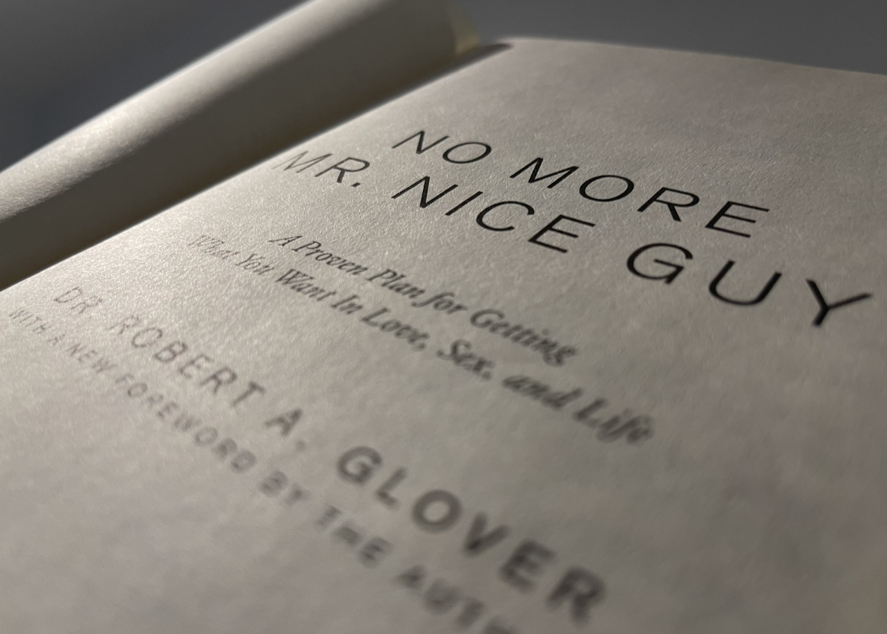
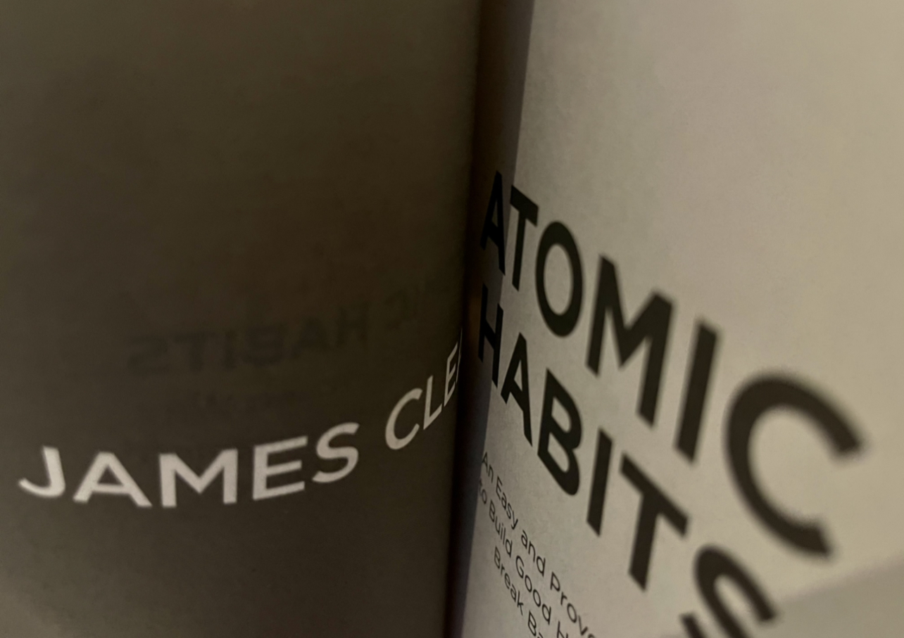

ABOUT
Hey there ! How are you, My name is Sovisal. A computer science student, Nice to meet you !
I am a compuer science student at Swinburne Univeristy of Technology currently living in Melbourne, Australia. I am passionate about business and a start up but decided to be a part of computer science school to explore further opportunity. I am a guy with alot of interest, beside investing in my own coffee shop in 2016, i also run a start up called SmartGame with my peer at home country organising taekwondo and similar kind of sport event by implementing a system that are imported from oversea which have an ability to judge a foul for judges to make decision during the game. Talking about sport, I have a good understaing in Takwondo and similar kind of sport. I pratice Taekwondo since i was 6 years and performance at professional level as a National Team for 2 years before coming back to persue my education in computer science. In 2020, i got promoted to 3rd degree black belt by KUKKIWON World Taekwondo Headquater.
Favoriote Book
No More Mr Nice Guys

See It not always good to be nice that just how it work in life. NO MORE MR NICE GUY by DR. Robert A.GLover is all time favorite book to read. In fact it have a significant impact in my life.
Atomic Habbit by James Clear

Get bitten by a spider, a loser turn superhero overnight_spiderman. But is that really possible for one become better self in such a short time. The book demonsrate why small habbit impact bigger thing in life by being better 1% a days.